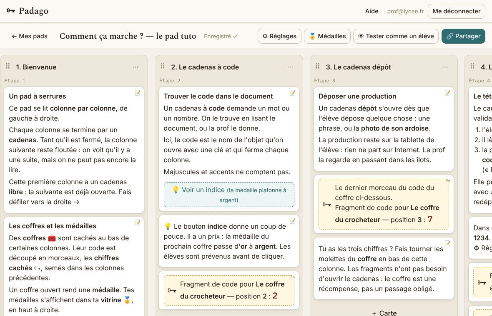
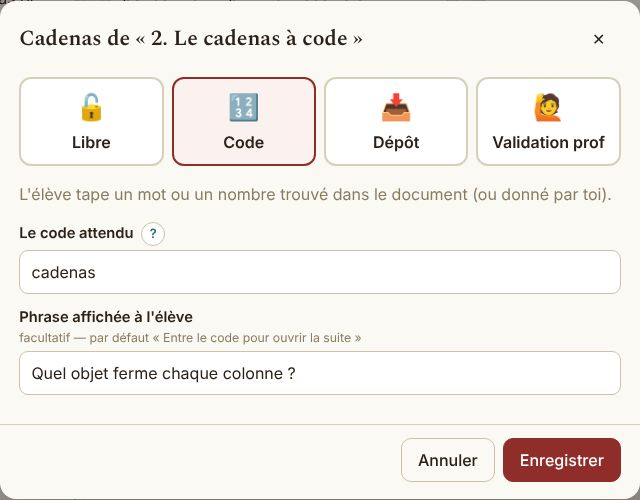
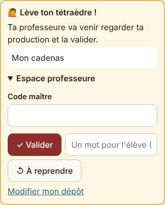
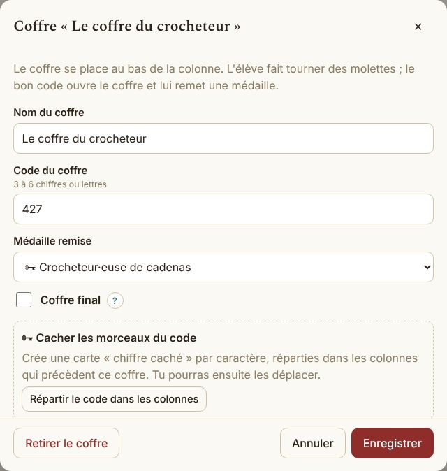
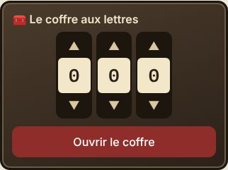
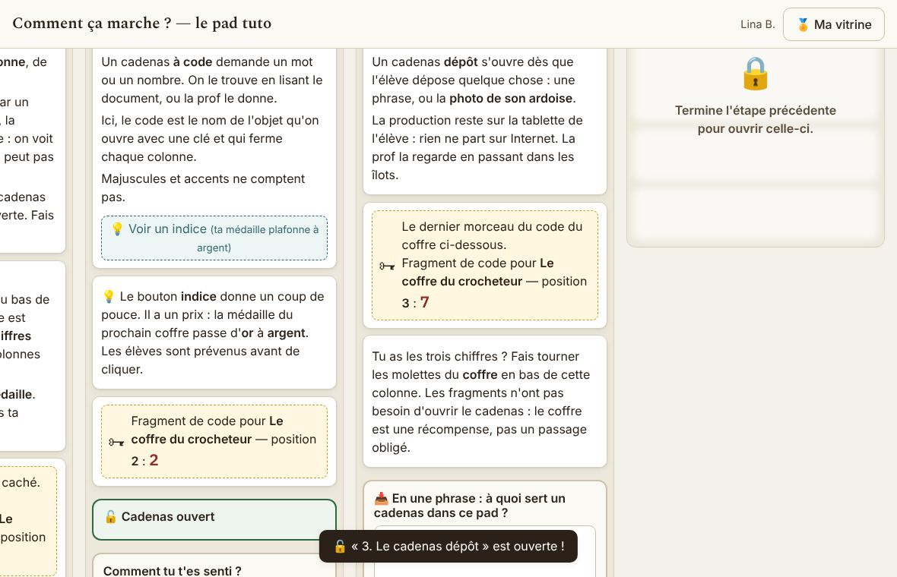

Aide · révisée le 13/11/2026
Padago en une page
Un pad, c'est Digipad avec des serrures : des colonnes, des cartes, et au bas de chaque colonne un cadenas qui décide quand la suivante s'ouvre. Les élèves avancent seuls, à leur rythme ; des coffres leur remettent des médailles.
Le plus rapide pour comprendre : parcourir le pad tuto comme un élève (code maître : 1234), puis, dans Mes pads, cliquer « Partir du pad tuto » pour l'avoir à soi et le modifier.
1. Construire un pad

- ＋ Colonne à droite du tableau, ＋ Carte au bas d'une colonne.
- Cliquer sur une carte pour la modifier. Six types : texte, fichier, image, lien, vidéo, chiffre caché.
- Déposer tes fichiers : fais glisser un PDF, un Word, un Excel, un PowerPoint ou une photo depuis ton ordinateur jusque sur une colonne : la carte se crée toute seule. Ou carte 📎 Fichier → « Choisir sur mon ordinateur ». Les élèves l'ouvrent ou le téléchargent.
- Glisser une carte pour la déplacer, y compris vers une autre colonne. La poignée ⠿ déplace une colonne entière.
- Tout s'enregistre tout seul (« Enregistré ✓ » en haut).
📎 Limites des fichiers : 10 Mo par fichier, 300 Mo en tout (la jauge 📎 en haut de l'éditeur, et sur Mes pads). Un fichier est ouvert par tout élève qui a le lien du pad : jamais de noms d'élèves ni de notes. Supprimer une carte ou un pad efface ses fichiers.
🎬 Vidéos : elles ne se déposent pas dans le pad (trop lourdes pour notre hébergement gratuit). Mets la vidéo sur ton OneDrive (clic droit → Partager → Copier le lien, « toute personne disposant du lien ») et colle ce lien dans une carte 🎬 : elle se lit dans le pad, même au lycée. Un lien YouTube ou d'une autre plateforme s'ouvre dans un autre onglet (YouTube est bloqué au lycée).
2. Choisir le cadenas de chaque colonne

| Cadenas | La colonne suivante s'ouvre quand… |
|---|---|
| 🔓 Libre | tout de suite. |
| 🔢 Code | l'élève tape le bon mot ou nombre. Majuscules et accents ne comptent pas. |
| 📥 Dépôt | l'élève a déposé un texte court ou la photo de son ardoise. |
| 🙋 Validation prof | tu as validé, sur sa tablette, avec ton code maître. |
3. La validation en classe

L'élève dépose, puis lève son tétraèdre. Tu viens, tu regardes, tu ouvres « Espace professeure » sur sa tablette et tu tapes ton code maître :
- ✓ Valider : la suite s'ouvre ;
- ↺ À reprendre, avec un mot court si tu veux : l'élève corrige et redépose.
Le code maître se choisit dans ⚙ Réglages. Les élèves ne peuvent pas le lire dans la page, ni les codes des cadenas.
Les productions restent sur la tablette de l'élève : rien ne part sur Internet.
4. Coffres, chiffres cachés et médailles

Au bas d'une colonne, 🧰 Ajouter un coffre : un code de 3 à 6 chiffres ou lettres, et la médaille qu'il remet.
« Répartir le code dans les colonnes » crée tout seul une carte chiffre caché par caractère, dans les colonnes précédentes.
Un coffre final ne s'ouvre qu'avec toutes les autres médailles. Les médailles se créent dans 🏅 Médailles (nom, icône, or / argent / bronze).

5. Les options (⚙ Réglages)
- Carte du parcours : la frise des étapes en haut de l'écran élève.
- Indices : un bouton 💡 sur les cartes où tu en écris un. Un indice peut coûter : la médaille suivante plafonne à l'argent ou au bronze.
- Salle secrète : les colonnes marquées ✨ (menu ⋯ de la colonne) n'apparaissent qu'à ceux qui ont tout fini.
- Ressenti : quatre visages en fin d'étape.
6. Donner le pad aux élèves

- 👁 Tester comme un élève avant la séance : rien n'est enregistré.
- 🔗 Partager → Projeter le QR code, ou copier le lien dans l'ENT. Le lien ne change pas quand tu modifies le pad.
- L'élève écrit son prénom + l'initiale de son nom. Pas de compte. Sa progression reste sur sa tablette : il ferme, il revient, tout est là.
- S'il change de tablette : le code de reprise de sa vitrine 🏅 restaure ses étapes et ses médailles.
7. Partager avec une collègue
- 🔗 Partager → Pour une collègue : elle colle ce lien dans Mes pads → Copier le pad d'une collègue. Elle obtient sa propre copie, fichiers compris ; la tienne ne bouge pas.
- Ou ⬇ Télécharger le fichier du pad et l'envoyer par mail : elle l'ouvre avec Importer un fichier. Attention, le fichier contient les codes en clair.
- Dupliquer (dans Mes pads) fait une copie pour toi, à adapter pour une autre classe.